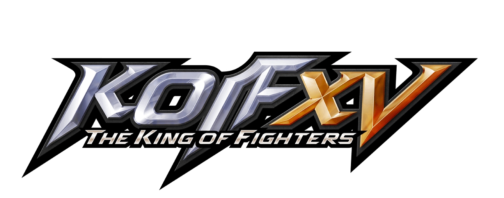

簡介
格鬥遊戲是操縱自己的角色和對手進行近身格鬥。這些角色傾向於設計成實力均衡，
並無像一般動作角色扮演遊戲有等級或裝備等強度差異。
歷史
最早以拳頭格鬥為特色的遊戲是1976年的《重量級拳王》，
1984年的《空手道》將本類型推廣為一對一武術對戰遊戲。
1985年的《功夫》特色在於敵手會使用不同型態的打鬥方式，
《截拳道》則更進一步在家用主機普及了本遊戲類型。
1991年卡普空的高度成功作品《快打旋風II》問世，
改進並使格鬥遊戲類型的許多常規通俗化。
代表作品
格鬥遊戲是一種以對戰為核心的遊戲類型，玩家透過操控遊戲角色進行對戰，
使用各種技能和招式擊敗對手。代表作品包括《真人快打》系列、
《拳皇》系列和《快打旋風》系列等。
